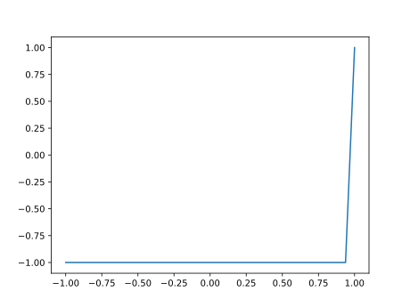
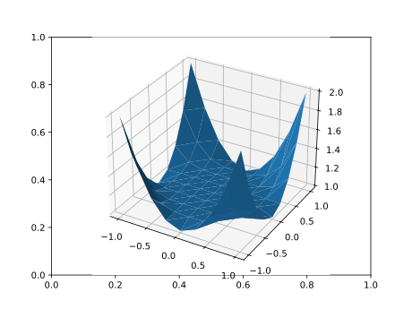
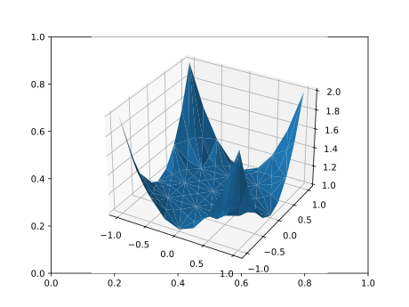
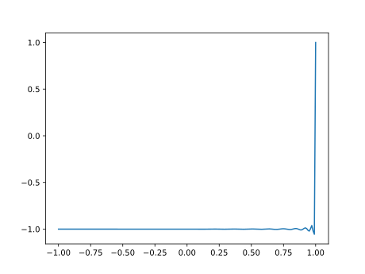
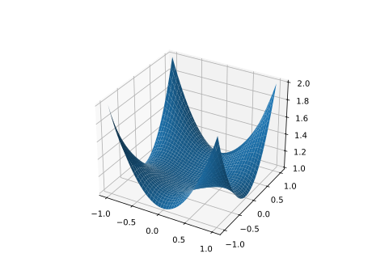
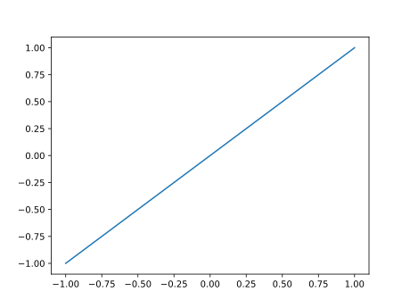
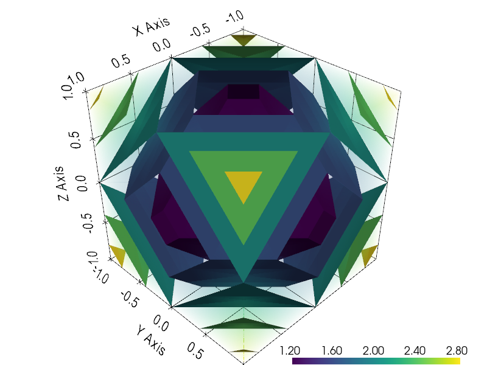

MultiGridBarrier 0.12.8
MultiGridBarrier is a Julia module for solving nonlinear convex optimization problems in function spaces, such as p-Laplace problems. When regularity conditions are satisfied, the solvers are quasi-optimal.
The package features finite element and spectral discretizations in 1d, 2d, and 3d.
Citation
If you use this package in your research, please cite:
S. Loisel, "The spectral barrier method to solve analytic convex optimization problems in function spaces," Numerische Mathematik, vol. 158, no. 1, pp. 281–302, 2026. DOI: 10.1007/s00211-025-01508-0
BibTeX:
@article{loisel2026spectral,
author = {Loisel, Sébastien},
title = {The spectral barrier method to solve analytic convex optimization problems in function spaces},
journal = {Numerische Mathematik},
volume = {158},
number = {1},
pages = {281--302},
year = {2026},
publisher = {Springer},
doi = {10.1007/s00211-025-01508-0}
}Workflow at a glance
Every problem is solved with the same three-step pattern:
- Build a single-level
Geometrywith one of the mesh constructors (fem1d,fem2d,fem2d_P1,fem2d_P2,fem3d,spectral1d,spectral2d). These take only mesh inputs — noL, no hierarchy. - Attach a multigrid hierarchy with
amg(geom)(algebraic multigrid). Returns aMultiGrid. - Assemble the problem with
assemble(mg; kwargs...), returning anMGBProblem. - Solve with
mgb_solve(prob; kwargs...).
To solve on a GPU, load the CUDA extension (using CUDA, CUDSS_jll) and pass device = CUDADevice to mgb_solve; the assembled problem is moved to the device, solved there, and the returned MGBSOL is moved back to native CPU types. With a functional GPU present this becomes the default device — pass device = CPUDevice to force the CPU.
If you want a finer mesh than the single-level geom provides, refine it first with subdivide(geom, L) and then attach AMG: amg(subdivide(geom, L)). The legacy geometric_mg(geom, L) builds a geometric-subdivision hierarchy instead of AMG; it is still available for callers that specifically want geometric transfers.
Choosing the AMG coarsening
For the FEM discretizations, amg(geom; prolongator=...) selects how the multigrid hierarchy is built. A prolongator is a callable mapping a stiffness matrix to its level prolongations; three factories are provided (each forwards keyword arguments such as max_coarse to the underlying builder):
amg_ruge_stuben(; kwargs...)— classical Ruge–Stüben (the default), viaAlgebraicMultigrid.jl.amg_smoothed_aggregation(; kwargs...)— smoothed aggregation, via the same package.amg_pyamg(; solver=:rootnode, kwargs...)— the Pythonpyamgpackage (:rootnodeenergy-minimization,:smoothed_aggregation, or:ruge_stuben), imported lazily throughPyCall.
mgb_solve(assemble(amg(fem2d_P1(); prolongator = amg_ruge_stuben(max_coarse=4)); p=1.5); verbose=false);Finite elements
A 1d p-Laplace problem:
using MultiGridBarrier
nodes = collect(range(-1.0, 1.0, length=33))
geom = fem1d(; nodes)
plot(mgb_solve(assemble(amg(geom); p=1.0); verbose=false));
A 2d p-Laplace problem on tensor-product Q_k quadrilaterals (here biquadratic, k=2):
plot(mgb_solve(assemble(amg(subdivide(fem2d(; k=2), 3)); p=1.0); verbose=false));
The same problem on P2+cubic-bubble triangles (fem2d_P2):
plot(mgb_solve(assemble(amg(subdivide(fem2d_P2(), 3)); p=1.0); verbose=false));
Spectral elements
1d p-Laplace via spectral elements:
plot(mgb_solve(assemble(amg(spectral1d(n=40)); p=1.0); verbose=false));
A 2d p-Laplace problem:
plot(mgb_solve(assemble(amg(spectral2d(n=5)); p=1.5); verbose=false));
Solving $\infty$-Laplacians
For $p \geq 1$ on a domain $\Omega$, the $p$-Laplace problem minimises $J(u) = \|\nabla u\|_{L^p(\Omega)}^p + \int_{\Omega} fu,$ where $u$ lies in a suitable function space satisfying, e.g., Dirichlet conditions and $f$ is a forcing. The $\infty$-Laplace problem replaces the inner norm by $L^\infty$: $J(u) = \|\nabla u\|_{L^\infty(\Omega)}^p + \int_{\Omega} fu.$ We take $p=1$ below for simplicity.
plot(mgb_solve(assemble(amg(fem1d(; nodes)); p=1.0, state_variables=[:u :dirichlet; :s :uniform]); verbose=false));
Parabolic problems
A time-dependent problem:
plot(parabolic_solve(amg(subdivide(fem2d_P1(), 3)); h=0.1, verbose=false))3D Finite Elements
fem3d provides 3D hexahedral Q_k finite elements — the 3D case of the same dimension-generic tensor-product family as fem1d/fem2d — visualized with PyVista.
sol = mgb_solve(assemble(amg(subdivide(fem3d(; k=1), 2))); verbose=false)
fig = plot(sol)
A time-dependent 3D problem:
plot(parabolic_solve(amg(subdivide(fem3d(; k=1), 2)); h=0.1, verbose=false))Front-end summary
The mesh constructors below all return a single-level Geometry. They are intended for Dirichlet boundary conditions.
| Function | Element | Dim | Required kwargs |
|---|---|---|---|
fem1d | Q_k interval (P1 at k=1) | 1D | nodes, k (defaulted) |
fem2d | Q_k quadrilaterals | 2D | K, k (defaulted) |
fem2d_P1 | P1 triangles | 2D | K (defaulted) |
fem2d_P2 | P2 + cubic bubble triangles | 2D | K (defaulted) |
fem3d | Q_k hexahedra | 3D | K, k (defaulted) |
spectral1d | spectral (Chebyshev) | 1D | n |
spectral2d | spectral (tensor Chebyshev) | 2D | n |
fem1d/fem2d/fem3d are the tensor-product Qk family (the map is isoparametric, so curved elements are supported); `fem2dP1/fem2dP2` are the simplicial Pk family on triangles.
Pass the resulting Geometry to amg(geom) to obtain a MultiGrid — an algebraic- multigrid hierarchy on the fine mesh. To refine the mesh first, compose with subdivide(geom, L): amg(subdivide(geom, L)).
The legacy geometric_mg(geom, L) builds a geometric-subdivision hierarchy instead of AMG; it remains available for callers that specifically want geometric transfers.
Inputs: the K mesh
All FEM constructors take their fine mesh as a K keyword argument (fem1d(; nodes) derives K from nodes by default). K is a 3-tensor K::Array{T,3} of shape (V, N, D):
Vis the number of local nodes per element. For the tensor-product Qk family it is(k+1)^d:k+1forfem1d,(k+1)^2forfem2d,(k+1)^3forfem3d(you may instead pass the2^d-corner tensor — 2, 4 or 8 — for straight elements, which is promoted internally). For the simplicial familyVis 3 for `fem2dP1and 7 forfem2d_P2`;Nis the number of elements;Dis the spatial dimension (1, 2, or 3).
K[v, e, d] is the d-th coordinate of the v-th local node of the e-th element. The format is the broken / discontinuous-Galerkin convention — each element carries its own copy of every local node, and shared degrees of freedom are deduplicated by coincident coordinates when the Geometry is built. This determines geom.t, the full-node connectivity (t[v,e] = global id of local node v in element e) that the AMG hierarchy and boundary detection consult thereafter. The tensor-product constructors (fem1d/fem2d/fem3d) also accept a t= keyword to supply that connectivity explicitly — bypassing the coordinate dedup — so that geometrically-coincident nodes can stay topologically distinct on slit domains, branch cuts, and glued manifolds; tensor_dofmap builds such a t from corner connectivity. So in 1D, nodes x[1] < x[2] < … < x[m] defining elements [x[1],x[2]], [x[2],x[3]], …, [x[m-1],x[m]] give a (2, m-1, 1) tensor
K = reshape(T[x[1], x[2], x[2], x[3], x[3], x[4], …, x[m-1], x[m]], 2, m-1, 1)with each interior node appearing twice (once per neighbouring element). The stored geom.x carries the same shape as K; the flat (V·N, D) view used by sparse operators is recovered via reshape(geom.x, :, size(geom.x, 3)).
Spectral discretizations (spectral1d, spectral2d) have no element structure and use N = 1 — geom.x has shape (n, 1, 1) in 1D and (n², 1, 2) in 2D.
amg vs subdivide vs geometric_mg
amg(geom)is the recommended hierarchy: it builds AMG from the fine mesh's continuous-P1 stiffness. Works whethergeomcame from your own mesher or from uniform subdivision viasubdivide.subdivide(geom, L)is mesh refinement only: it returns a fineGeometryobtained by subdividing each input elementL−1times. Compose withamg(subdivide(geom, L))to get AMG on the refined mesh.geometric_mg(geom, L)is the legacy alternative: it produces a hierarchy ofLlevels using purely geometric subdivision transfers (no AMG coarsening). Kept for cases that need geometric transfers specifically.
Module reference
MultiGridBarrier.MultiGridBarrier — Module
module MultiGridBarrierMultiGridBarrier solves nonlinear convex optimization problems in function spaces using a barrier (interior-point) method accelerated by a multigrid hierarchy. The package exposes:
- Single-level mesh constructors:
fem1d,fem2d,fem2d_P1,fem2d_P2,fem3d,spectral1d,spectral2d. Each returns aGeometry. - Topological connectivity for slit domains / glued manifolds:
tensor_dofmapbuilds full-node connectivity from corner connectivity (no coordinates); pass the result as thet=keyword offem1d/fem2d/fem3dso geometrically-coincident nodes stay distinct. - The hierarchy builder:
amg(geom)wraps aGeometryand returns aMultiGrid(algebraic-multigrid hierarchy on the fine mesh). - A mesh-refinement utility:
subdivide(geom, L)returns a refinedGeometry. Compose with AMG viaamg(subdivide(geom, L)). - A legacy geometric-subdivision hierarchy:
geometric_mg(geom, L). Still available for callers that specifically want geometric transfers; new code should preferamg. - Problem assembly:
assemble(mg::MultiGrid; kwargs...) -> MGBProblem. - The main solver:
mgb_solve(prob::MGBProblem; kwargs...) -> MGBSOL. - A time-dependent solver:
parabolic_solve(mg::MultiGrid; kwargs...).
A gentle introduction via the p-Laplacian
For a domain Ω ⊂ ℝᵈ and p ≥ 1, consider the variational problem
\[\min_{u} \; J(u) = \int_{\Omega} \|\nabla u\|_2^p + f\,u \, dx\]
subject to appropriate boundary conditions (e.g., homogeneous Dirichlet). The Euler–Lagrange equation gives the p-Laplace PDE.
Typical workflow
geom = fem2d_P2() # single-level mesh
mg = amg(geom) # build AMG hierarchy
prob = assemble(mg; p = 1.5) # assemble the (native) MGBProblem
sol = mgb_solve(prob)
plot(sol)CUDA GPU acceleration (optional extension)
CUDA support is provided as a Julia package extension (MultiGridBarrierCUDAExt). Load CUDA and CUDSS_jll to enable it, then select the GPU with device = CUDADevice:
using CUDA, CUDSS_jll
using MultiGridBarrier
sol = mgb_solve(assemble(amg(fem2d_P2()); p = 1.5); device = CUDADevice)mgb_solve moves the assembled problem to the GPU, solves there, and moves the solution back, so the returned MGBSOL is always in native CPU types. When a functional GPU is present the default device becomes CUDADevice; pass device = CPUDevice to force the CPU. The lower-level native_to_cuda / cuda_to_native converters remain available.
See also
- Mesh constructors:
fem1d,fem2d,fem2d_P1,fem2d_P2,fem3d,spectral1d,spectral2d;tensor_dofmap(+ thet=keyword) for slit-domain / glued-manifold connectivity. - Hierarchy:
amg,subdivide(and the legacygeometric_mg). - Solvers:
mgb_solve,parabolic_solve. - Convex:
convex_Euclidian_power,convex_linear,convex_piecewise,intersect. - Visualization & sampling:
plot,interpolate. - Backend selection:
devicekwarg ofmgb_solve,CPUDevice,CUDADevice,native_to_device,device_to_native,default_device. - Problem assembly:
assemble,MGBProblem. - CUDA (lower level):
native_to_cuda,cuda_to_native,clear_cudss_cache!.
Types reference
MultiGridBarrier.CPUDevice — Type
CPUDevice <: DeviceThe native CPU backend; native_to_device/device_to_native are the identity.
MultiGridBarrier.CUDADevice — Type
CUDADevice <: DeviceThe CUDA GPU backend. Requires the MultiGridBarrierCUDAExt extension, enabled by using CUDA, CUDSS_jll before (or alongside) using MultiGridBarrier.
MultiGridBarrier.Convex — Type
Convex{T}Container for a convex constraint set used by the MGB solver.
Fields:
- barrier: (F0, F1, F2) - value, gradient, Hessian functions
- cobarrier: (F0, F1, F2) - with slack for feasibility
- slack: initial slack function
- args: tuple of parameter arrays, splatted to maprowsgpu
Barrier functions receive (args_rows..., y) where args_rows are per-vertex parameter data (via broadcasting), and y is the solution SVector. This enables true GPU execution without scalar indexing.
Construct via helpers like convex_linear, convex_Euclidian_power, convex_piecewise, or intersect. These helpers return a single Convex{T} (the barrier is evaluated only at the fine level).
MultiGridBarrier.Device — Type
abstract type DeviceMarker selecting the compute backend for mgb_solve. Concrete devices are CPUDevice (always available) and CUDADevice (requires the CUDA extension: using CUDA, CUDSS_jll).
MultiGridBarrier.FEM2D_P1 — Type
FEM2D_P1{T}Discretization tag for 2D P1 triangular FEM. Stores the user's per-element corner tensor K of shape (3, N, 2) — K[v, t, d] is coordinate d of vertex v of triangle t.
MultiGridBarrier.FEM2D_P2 — Type
FEM2D_P2{T}2D FEM (P2+bubble) discretization descriptor. Stores the corner triangulation K shape (3, N, 2) and the canonical P2+bubble mesh K7 shape (7, N, 2).
MultiGridBarrier.Geometry — Type
Geometry{T,X<:AbstractArray{T,3},W,M_op,Discretization}Single-level container for discretization geometry. Holds only the fine-level mesh and operators — no multigrid hierarchy. Use amg(geom) to attach an algebraic-multigrid hierarchy and return a MultiGrid. (The legacy geometric_mg(geom, L) builds a geometric-subdivision hierarchy instead; new code should prefer amg.)
Type parameters
T: scalar numeric type (e.g.Float64)X<:AbstractArray{T,3}: type of the mesh tensorx(typicallyArray{T,3}).W: type of the weight storagew(typicallyVector{T}).M_op: matrix type for operators (e.g.SparseMatrixCSC{T,Int},BlockDiag{T}).Discretization: front-end descriptor (e.g.FEM1D{T},FEM2D_P2{T},SPECTRAL1D{T}).
Fields
discretization::Discretization: discretization descriptor encoding dimension and grid info.t::Matrix{Int}: cached element connectivity of shape(V, N)—t[v, e]is the global node id of local nodevin elemente, so broken nodes that coincide across elements share an id andmaximum(t)is the number of distinct nodes. The 4-arg constructor derivestfromxby geometric dedup; the inner 5-arg constructor (andfem1d/fem2d/fem3dwitht=) take it verbatim, letting coincident-but-distinct nodes (slits, branch cuts, glued manifolds) stay topologically separate. The amg path (find_boundary,amg) readstdirectly; coordinate dedup buildstonly in the 4-arg constructor and the legacygeometric_mgpath. Always a CPUMatrix{Int}, even for GPU geometries.x::X: mesh as a 3-tensor of shape(V, N, D)—Vvertices per element,Nelements,Dspatial dimensions. Reshape-compatible with the legacy flat layout viareshape(x, V*N, D)(zero-copy). Spectral discretizations useN = 1(a single notional "element" comprising every Chebyshev node).w::W: quadrature weights matching the flattened node order (lengthV*N).operators::Dict{Symbol,M_op}: fine-level discrete operators (e.g.:id,:dx,:dy).
MultiGridBarrier.HTML5anim — Type
HTML5animWrapper around an HTML5 <video> produced by the parabolic-animation plot methods. It carries the rendered video markup in its anim::String field and defines show(io, MIME"text/html"(), ::HTML5anim), so returning one as the last value of a Jupyter/Pluto cell (or in Documenter output) embeds the animation inline.
MultiGridBarrier.MGBConvergenceFailure — Type
MGBConvergenceFailure <: ExceptionThrown when the MGB solver fails to converge (feasibility or main phase). Includes a descriptive message about the failure.
MultiGridBarrier.MGBProblem — Type
MGBProblem{T,MT,FT,GT,QT,GeoT}A fully assembled, array-valued, closure-free convex problem ready for the MGB solver. Produced by assemble; consumed by mgb_solve. Every closure that specifies the problem (f, g, and the constraint data A, b, p, select) has been lowered to per-vertex grids during assembly, so an MGBProblem is pure data: moving it between backends (native_to_device) is plain array movement, and a MGBProblem{T,...,CuArray,...} differs from its CPU sibling only by array type.
Fields
M: the(main, feasibility)AMG hierarchy pair (_prepare_amgoutput).f: linear-term grid (f_grid).g: Dirichlet/initial-data grid (g_grid).Q::Convex: the convex constraint (itsargsare per-vertex grids).geometry: the fine-levelGeometry(for the returned solution / plotting).
MultiGridBarrier.MultiGrid — Type
MultiGrid{T,M_R,G<:Geometry{T}}A Geometry plus a multigrid hierarchy. For each state-variable subspace symbol (:dirichlet, :full, :uniform, or a user-named Dirichlet class) the hierarchy stores a single family of fine-level prolongations R[X][l]: the matrix that lifts level-l-X-subspace coefficients directly to the fine broken basis (the R_{ℓ,X} of the paper). R[X][end] is the fine-level subspace embedding itself (identity for :full, the constant column for :uniform, the continuous zero-trace embedding for Dirichlet classes).
The per-level (level → level+1) transfer/restriction operators are an implementation detail of amg/geometric_mg: they are composed into the R[X][l] at construction time and not retained, since the solver only ever evaluates the barrier at the fine level and restricts to a coarse search space via R[X][l].
Fields
geometry::G: the fine-levelGeometry.R::Dict{Symbol,Vector{M_R}}:R[X][l]is the level-l→ fine prolongation in subspaceX.
Constructors
MultiGrid(geometry, subspaces, refine)— stretches the per-subspace hierarchies to a common depth, normalizes:uniform, and composesR[X][l] = (refine[X] chain l→L) · subspaces[X][l]. Accepts either per-subspaceDicttransfers or plainVectors (replicated across every subspace key).MultiGrid(geometry, R)— store precomposed prolongations directly (e.g. the Kronecker construction inspectral2d).
MultiGridBarrier.SPECTRAL1D — Type
SPECTRAL1D{T}1D spectral discretization descriptor (Chebyshev). Field: n::Int (nodes).
MultiGridBarrier.SPECTRAL2D — Type
SPECTRAL2D{T}2D spectral discretization descriptor (tensor Chebyshev). Field: n::Int (nodes per dim).
MultiGridBarrier.TensorFEM — Type
TensorFEM{d, T}Discretization descriptor for d-dimensional tensor-product Q_k Lagrange FEM.
Fields
k::Int: polynomial order (each element carries(k+1)^dLagrange-Chebyshev nodes).K::Array{T,3}: the Q1 corner mesh tensor of shape(2^d, N, d)—K[v, e, c]is coordinatecof cornervof elemente. Corners are in tensor-product order over{-1,+1}^d(axis-1 fastest). Informational / used bygeometric_mg.
FEM1D = TensorFEM{1} and FEM2D = TensorFEM{2} are provided as aliases.
Functions reference
Base.intersect — Method
intersect(mg::MultiGrid, U::Convex{T}, rest...) where {T}Return the intersection of convex domains as a single Convex{T}. Equivalent to convex_piecewise with all pieces active at all vertices.
MultiGridBarrier.amg — Function
amg(geom::Geometry; prolongator=amg_ruge_stuben(max_coarse=2), dirichlet_nodes=Dict(:dirichlet => find_boundary(geom))) -> MultiGrid # FEM
amg(geom::Geometry) -> MultiGrid # spectralBuild an algebraic-multigrid hierarchy on top of geom, returning a MultiGrid. Dispatched per discretization; the hierarchy's fine level matches geom.
Keyword arguments (FEM discretizations: FEM1D, FEM2D_P1, FEM2D_P2, FEM3D)
prolongator = amg_ruge_stuben(max_coarse=2): the algebraic-multigrid hierarchy builder used to coarsen the auxiliary P1 problem. A prolongator is a callable mapping aSparseMatrixCSC{Float64,Int}stiffness to the vector of level prolongation matrices (finest → coarsest); these set the depth of the hierarchy. Three factory functions construct one while capturing the underlying AMG parameters:amg_ruge_stuben(; kwargs...)— classical Ruge–Stüben (the default), viaAlgebraicMultigrid.ruge_stuben. The depth parametermax_coarseis set through the factory, e.g.amg(geom; prolongator=amg_ruge_stuben(max_coarse=4)).amg_smoothed_aggregation(; kwargs...)— smoothed aggregation, viaAlgebraicMultigrid.smoothed_aggregation.amg_pyamg(; solver=:rootnode, kwargs...)— the Pythonpyamgpackage (:rootnodeenergy-minimization,:smoothed_aggregation, or:ruge_stuben), imported lazily through PyCall.
All
kwargsare forwarded to the underlying solver.dirichlet_nodes::Dict{Symbol,Vector{Tuple{Int,Int}}} = Dict(:dirichlet => find_boundary(geom)): one entry per zero-trace ("dirichlet-style") subspace. Each key is a subspace symbol you may assign to a state-variable component viastate_variables, and its value is the set of mesh nodes constrained to zero trace in that subspace, given as(vertex, element)index pairs (the formatfind_boundaryreturns).The default builds a single
:dirichletsubspace constraining the whole boundary∂Ω. To impose different Dirichlet boundaries on different components, name them and supply a node set for each, e.g. forz = (u, s)withuclamped on the north edge andson the south:state_variables = [:u :dirichlet_north :s :dirichlet_south] mg = amg(geom; dirichlet_nodes = Dict(:dirichlet_north => north_pairs, :dirichlet_south => south_pairs))Per entry, pass a subset of
∂Ωfor mixed Dirichlet/Neumann conditions,Tuple{Int,Int}[]for pure Neumann, or a single pinned node to break the constant nullspace. The reserved subspaces:full(all-corners Neumann) and:uniform(global constants) are always available and must not appear as keys. These select which nodes are constrained; the boundary values (the Dirichlet liftg) are supplied separately tomgb_solve.auxiliary_postprocess::Function = identity(opt-in, FEM1D / FEM2D_P1 / FEM3D): a unary function applied to the all-corners (Neumann) auxiliary stiffness before it is fed toprolongator. Use to swap the geometric Galerkin matrix for a graph-Laplacian-style operator that AMG coarsens on graph topology alone. Example: pass the combinatorial Laplacian of the same sparsity (off-diag = -1, diag = degree) when running aggregation-based prolongators (amg_smoothed_aggregation,amg_pyamg(:rootnode)) on highly anisotropic problems near p=1 — that regime can otherwise blow up Newton iteration counts on the central path. The defaultidentityis robust across the bench (the geometric stiffness encodes useful per-row scaling that RS uses), so this is an opt-in escape hatch rather than a recommended default.
Spectral discretizations (SPECTRAL1D, SPECTRAL2D)
amg(geom) takes no keyword arguments. The zero-trace subspace is built by basis truncation rather than node masking, so dirichlet_nodes does not apply.
See also find_boundary, geometric_mg, subdivide.
MultiGridBarrier.amg_pyamg — Method
amg_pyamg(; solver::Symbol=:rootnode, kwargs...) -> prolongatorBuild a prolongator backed by the Python pyamg package (imported lazily via PyCall, installing from conda-forge if necessary). solver selects the pyamg solver: :rootnode (rootnode energy-minimization, the default), :smoothed_aggregation, or :ruge_stuben. Any kwargs are forwarded to the pyamg solver constructor. Pass the result to amg(geom; prolongator=...).
MultiGridBarrier.amg_ruge_stuben — Method
amg_ruge_stuben(; kwargs...) -> prolongatorBuild a prolongator that runs classical Ruge–Stüben AMG via AlgebraicMultigrid.ruge_stuben (the package default). Any kwargs (e.g. max_coarse=4) are forwarded. Pass the result to amg(geom; prolongator=...).
MultiGridBarrier.amg_smoothed_aggregation — Method
amg_smoothed_aggregation(; kwargs...) -> prolongatorBuild a prolongator that runs smoothed-aggregation AMG via AlgebraicMultigrid.smoothed_aggregation. Any kwargs (e.g. max_coarse=4) are forwarded. Pass the result to amg(geom; prolongator=...).
MultiGridBarrier.assemble — Method
assemble(mg::MultiGrid{T}; kwargs...) -> MGBProblemLower a problem specification to a closure-free, CPU MGBProblem. This is the single place where the problem closures are evaluated to grids: f/g via map_rows, and the constraint closures inside Q at its construction. The result is a backend-agnostic, native data structure; to solve on a GPU, hand it to mgb_solve(prob; device=CUDADevice), which moves it to the device and the solution back.
The five MGBProblem fields are built from mg and the keyword arguments as:
| field | value |
|---|---|
M | _prepare_amg(mg; state_variables, D) — the (main, feasibility) AMG pair |
f | f_grid, default map_rows(f, x) — the linear-term closure sampled at x |
g | g_grid, default map_rows(g, x) — the Dirichlet/initial-data closure at x |
Q | Q, default convex_Euclidian_power(T; mg, idx=default_idx(dim), p=xi->p) |
geometry | mg.geometry — the fine-level Geometry |
Keyword Arguments
dim::Integer = amg_dim(mg.geometry.discretization): spatial dimension; auto-detected.state_variables = [:u :dirichlet; :s :full],D = default_D(dim): solution components / function spaces and the differential operators applied to them; together they defineM.x = _xflat(mg): sample points wheref/gare evaluated, one row per node.p::T = T(1.0): p-Laplace exponent for the defaultQ.f/f_grid,g/g_grid: forcing and boundary/initial data, as closures (lowered viamap_rows) or as pre-built grids.Q::Convex{T}: convex constraint; defaults to a p-Laplace power-cone barrier.M: supply an AMG hierarchy pair directly instead of building it frommg.
Any extra (solver-control) keywords are accepted and ignored.
MultiGridBarrier.clear_cudss_cache! — Function
clear_cudss_cache!()Destroy all cached cuDSS factorizations and free associated GPU memory.
MultiGridBarrier.convex_Euclidian_power — Method
convex_Euclidian_power(::Type{T}=Float64; mg, idx=Colon(), A=(x)->I, b=(x)->T(0), p=x->T(2), ...)Create a convex set defined by Euclidean norm power constraints, with GPU support.
Constructs a Convex{T} representing the power cone: {y : s ≥ ‖q‖₂^p} where [q; s] = A(x)*y[idx] + b(x)
This is the fundamental constraint for p-Laplace problems where we need s ≥ ‖∇u‖^p for some scalar field u.
Arguments
T::Type=Float64: Numeric type for computations
Keyword Arguments
mg::MultiGrid: Required. The multigrid hierarchy (provides the fine grid).idx=Colon(): Indices of y to which transformation appliesA::Function: Matrix functionx -> A(x)for linear transformationb::Function: Vector functionx -> b(x)for affine shiftp::Function: Exponent functionx -> p(x)where p(x) ≥ 1A_grid,b_grid,p_grid: Optional pre-computed fine grids (computed from A,b,p if not provided)
Returns
A Convex{T} whose barriers capture the pre-computed fine parameter grids and receive (j::Integer, y::SVector) where j is the vertex index.
Mathematical Details
The barrier function is:
- For p = 2:
-log(s² - ‖q‖²) - For p ≠ 2:
-log(s^(2/p) - ‖q‖²) - μ(p)*log(s)where μ(p) = 0 if p∈{1,2}, 1 if p<2, 2 if p>2
Examples
# Standard p-Laplace constraint with GPU support
mg = amg(fem1d(Float32; nodes=collect(range(-1f0, 1f0, length=33))))
Q = convex_Euclidian_power(Float32; mg=mg, idx=default_idx(1), p=x->1.5f0)
# Q is a single Convex{Float32}MultiGridBarrier.convex_linear — Method
convex_linear(::Type{T}=Float64; mg, idx=Colon(), A=(x)->I, b=(x)->T(0), A_grid=nothing, b_grid=nothing)Create a convex set defined by linear inequality constraints, with GPU support.
Constructs a Convex{T} representing linear constraints. Defines F(y) = A * y[idx] + b where A, b are pre-computed per vertex. The interior is F > 0 (logarithmic barrier applied to each component).
Arguments
T::Type=Float64: Numeric type for computations
Keyword Arguments
mg::MultiGrid: Required. The multigrid hierarchy (provides the fine grid).idx=Colon(): Indices of y to which constraints apply (default: all)A::Function: Matrix functionx -> A(x)for constraint coefficientsb::Function: Vector functionx -> b(x)for constraint boundsA_grid,b_grid: Optional pre-computed fine grids (computed from A,b if not provided)
Returns
A Convex{T} whose barriers capture the pre-computed fine grids.
Examples
mg = amg(fem1d(Float32; nodes=collect(range(-1f0, 1f0, length=33))))
# Box constraints: -1 ≤ y ≤ 1
A_box(x) = SMatrix{4,2,Float32}(1,0,-1,0, 0,1,0,-1)
b_box(x) = SVector{4,Float32}(1, 1, 1, 1)
Q = convex_linear(Float32; mg=mg, A=A_box, b=b_box, idx=SVector(1, 2))MultiGridBarrier.convex_piecewise — Method
convex_piecewise(::Type{T}=Float64; Q::Tuple{Vararg{Convex{T}}}, mg, select::Function=x->(true,...)) where {T}Build a single Convex{T} that combines multiple convex domains with spatial selectivity.
Arguments
Q::Tuple{Vararg{Convex{T}}}: tuple of convex pieces, oneConvex{T}each.mg::MultiGrid: multigrid hierarchy (provides the fine grid).select::Function: a functionx -> Tuple{Bool,...}indicating which pieces are active at spatial positionx.select_grid: (optional) pre-computed fine selection grid. If not provided, computed fromselect.
Semantics
The resulting Convex has:
barrier(j, y) = ∑(Q[k].barrier(j, y) for k where sel[j][k])cobarrier(j, yhat) = ∑(Q[k].cobarrier(j, yhat) for k where sel[j][k])slack(j, y) = max(Q[k].slack(j, y) for k where sel[j][k])
The slack is the maximum over active pieces, ensuring a single slack value suffices for feasibility.
Examples
# Intersection of two convex domains
U = convex_Euclidian_power(Float64; mg=mg, idx=SVector(1, 3), p=x->2)
V = convex_linear(Float64; mg=mg, A=x->A_matrix, b=x->b_vector)
select_both(x) = (true, true)
Qint = convex_piecewise(Float64; Q=(U, V), mg=mg, select=select_both)
# Region-dependent constraints
Q_left = convex_Euclidian_power(Float64; mg=mg, p=x->1.5)
Q_right = convex_Euclidian_power(Float64; mg=mg, p=x->2.0)
select(x) = (x[1] < 0, x[1] >= 0)
Qreg = convex_piecewise(Float64; Q=(Q_left, Q_right), mg=mg, select=select)See also: intersect, convex_linear, convex_Euclidian_power.
MultiGridBarrier.cuda_to_native — Function
cuda_to_native(x)Convert a CUDA Geometry, MultiGrid, or MGBSOL back to native CPU types.
MultiGridBarrier.default_device! — Method
default_device!(D::Type{<:Device}) -> Type{<:Device}Set the device mgb_solve uses when device is not given, and return it. Use this to force a backend regardless of what the CUDA extension auto-selected, e.g. default_device!(CPUDevice) to keep a test suite on the CPU even when a GPU is present. A per-call device= keyword still overrides this default.
MultiGridBarrier.default_device — Method
default_device() -> Type{<:Device}The device mgb_solve uses when device is not given. CPUDevice, unless the CUDA extension is loaded and CUDA.functional(), in which case CUDADevice. Pass device=CPUDevice/device=CUDADevice to mgb_solve to override per call.
MultiGridBarrier.device_to_native — Function
device_to_native(D::Type{<:Device}, x)Move x from device D back to native (CPU) types. CPUDevice is the identity; the CUDA extension supplies the CUDADevice method, delegating to cuda_to_native. The inverse is native_to_device.
MultiGridBarrier.fem1d — Method
fem1d(::Type{T}=Float64; nodes, k=1, K=<from nodes>) -> GeometryConstruct a single-level 1D Qk FEM Geometry. Each element carries k+1 Lagrange-Chebyshev nodes; k=1 reproduces the legacy P1 discretization exactly. nodes is the strictly increasing vector of element endpoints (the default mesh is the straight Qk element on each [nodes[i], nodes[i+1]]).
The map is isoparametric: pass K as the full (k+1, n_e, 1) Lagrange-node tensor to give each element a nontrivial 1D parametrization (interior nodes off the affine positions), or as the (2, n_e, 1) endpoint tensor for straight elements.
Pass t (a (k+1, n_e) Integer matrix; t[v,e] is the global id of local node v in element e) to supply full-node connectivity explicitly instead of recovering it by coordinate dedup — needed when geometrically-coincident nodes must stay topologically distinct (slit domains, branch cuts, glued manifolds). Build one from corner connectivity with tensor_dofmap.
Attach a hierarchy with amg(geom).
MultiGridBarrier.fem2d — Method
fem2d(::Type{T}=Float64; k=1, K=<unit square>) -> GeometryConstruct a single-level 2D Q_k FEM Geometry on quadrilaterals (k=1 is bilinear Q1). The map is isoparametric: pass K as the full ((k+1)^2, N, 2) Lagrange-node tensor (tensor order, axis-1 fastest) for curved quads, or as the (4, N, 2) Q1-corner tensor — order (-1,-1), (+1,-1), (-1,+1), (+1,+1) — for straight quads.
Pass t (a ((k+1)^2, N) Integer matrix; t[v,e] is the global id of local node v in element e) to supply full-node connectivity explicitly instead of recovering it by coordinate dedup — needed for slit domains, branch cuts, and glued manifolds, where geometrically-coincident nodes must stay topologically distinct. Build one from corner connectivity with tensor_dofmap.
Attach a hierarchy with amg(geom).
MultiGridBarrier.fem2d_P1 — Method
fem2d_P1(::Type{T}=Float64; K=<default unit-square>) -> GeometryConstruct a single-level 2D FEM P1 Geometry on the doubled-per-element fine triangulation K. Use amg(geom) to attach an algebraic-multigrid hierarchy. (The legacy geometric_mg(geom, L) builds geometric-subdivision transfers instead.)
Arguments
K::Array{T,3}(3 × N × 2): per-triangle corner tensor;K[v, t, d]is coordinatedof vertexvof trianglet.
The Geometry is intended for Dirichlet boundary conditions.
MultiGridBarrier.fem2d_P2 — Method
fem2d_P2(::Type{T}=Float64; K=<default 7-DOF unit square>) -> GeometryConstruct a single-level 2D FEM Geometry on the doubled P2+bubble mesh K (7 × N × 2). Use amg(geom) to attach an algebraic-multigrid hierarchy. (The legacy geometric_mg(geom, L) builds geometric-subdivision transfers instead.)
Arguments
K::Array{T,3}(7 × N × 2): P2+bubble per-triangle mesh; the 7 vertices per triangle are laid out ascorner1, edge(1,2), corner2, edge(2,3), corner3, edge(3,1), centroid.
The element geometry is isoparametric: the map from the reference triangle is built from all 7 node positions via the P2+bubble shape functions, so displacing the edge/centroid nodes off the straight midpoints/barycenter genuinely curves the element (with a node-varying Jacobian). Triangles must be orientation-preserving and non-self-intersecting — construction errors if any element's det J ≤ 0 at a quadrature node, since the barrier method requires strictly positive weights.
MultiGridBarrier.fem3d — Method
fem3d(::Type{T}=Float64; k=3, K=<unit cube>) -> GeometryConstruct a single-level 3D Q_k FEM Geometry on hexahedra. The map is isoparametric: pass K as the full ((k+1)^3, N, 3) Lagrange-node tensor (tensor order, axis-1 fastest) so displacing edge/face/interior nodes curves the hex (node-varying Jacobian), or as the (8, N, 3) Q1-corner tensor for straight hexes. The default is a single straight unit cube.
Pass t (a ((k+1)^3, N) Integer matrix; t[v,e] is the global id of local node v in element e) to supply full-node connectivity explicitly instead of recovering it by coordinate dedup (slit domains / glued manifolds). tensor_dofmap builds one from corner connectivity, though for k≥3 in 3D it does not yet number shared face-interior grids (it throws) — there, supply t by hand or use the dedup default.
Attach a hierarchy with amg(geom).
MultiGridBarrier.find_boundary — Function
find_boundary(geom::Geometry) -> Vector{Tuple{Int,Int}}Return the (v, e) index pairs of the mesh nodes on ∂Ω, in the per-element layout of geom.x (the 3-tensor of shape (V, N, D)): v is the local vertex index within element e. Duplicates are present — a corner shared by k elements contributes its k pairs (one per element that owns it).
amg(geom; dirichlet_nodes=Dict(:sym => set, …)) consumes these (v, e) pairs: each value set is a Vector{Tuple{Int,Int}} of the nodes constrained to zero trace in subspace :sym. A geometric position is treated as Dirichlet for that subspace iff any pair at that position is in set, so you can pass either the full set returned by find_boundary (or a subset) or a sparser representative-only set.
Defined for each FEM discretization (FEM1D, FEM2D_P1, FEM2D_P2, FEM3D). For spectral discretizations the zero-trace subspace is built by basis truncation rather than by node masking; the spectral amg does not accept dirichlet_nodes and find_boundary returns the perimeter Chebyshev nodes (paired with the single notional element index 1) for reference only.
Empty or singleton node sets are allowed; the resulting AMG problem may still be well-posed if the variational form carries a mass term.
MultiGridBarrier.find_boundary — Method
find_boundary(geom::Geometry{...,FEM2D_P1{T}}) -> Vector{Tuple{Int,Int}}(v, t) index pairs into geom.x for every vertex on ∂Ω. A corner shared by k triangles contributes its k pairs (one per triangle that owns it).
MultiGridBarrier.find_boundary — Method
find_boundary(geom::Geometry{...,FEM2D_P2{T}}) -> Vector{Tuple{Int,Int}}(v, t) index pairs into geom.x for every P2+bubble DOF (corner vertex or edge midpoint) on ∂Ω. Centroids never appear (they are interior by construction). Duplicates are present (a corner shared by k triangles contributes its k pairs; a boundary-edge midpoint contributes its single pair).
MultiGridBarrier.find_boundary — Method
find_boundary(geom::Geometry{...,SPECTRAL1D{T}}) -> Vector{Tuple{Int,Int}}The two (v, t) pairs [(1, 1), (n, 1)] for the endpoint Chebyshev nodes. Spectral geometries use a single notional element (size(geom.x, 2) == 1) since there is no real per-element structure; the flattened view has one row per unique node. Informational only: the spectral amg builds the zero-trace subspace by basis truncation, not node masking; it does not accept dirichlet_nodes.
MultiGridBarrier.find_boundary — Method
find_boundary(geom::Geometry{...,SPECTRAL2D{T}}) -> Vector{Tuple{Int,Int}}(v, 1) pairs (single notional element) for every Chebyshev node on the perimeter of the tensor-product spectral 2D mesh. Informational only: the spectral amg builds the zero-trace subspace by basis truncation, not node masking; it does not accept dirichlet_nodes.
MultiGridBarrier.find_boundary — Method
find_boundary(geom::Geometry{...,TensorFEM{d,T}}) -> Vector{Tuple{Int,Int}}(v, e) index pairs into geom.x for every Q_k DOF on ∂Ω. A (d-1)-face used by exactly one element is on the boundary; every DOF on such a face is returned (corner / edge / face-interior, including the k≥2 interior-of-face nodes).
MultiGridBarrier.geometric_mg — Function
geometric_mg(geom::Geometry, L::Int) -> MultiGridBuild a geometric-subdivision multigrid hierarchy of L levels on top of geom. The returned MultiGrid's geometry is the finest mesh (after L-1 levels of subdivision).
MultiGridBarrier.interpolate — Function
interpolate(M::Geometry, z::Vector, t)Interpolate a solution vector at specified points.
Given a solution z on the mesh M, evaluates the solution at new points t using the appropriate interpolation method for the discretization.
Supported discretizations
- 1D FEM (
FEM1D): piecewise-linear interpolation - 1D spectral (
SPECTRAL1D): spectral polynomial interpolation - 2D spectral (
SPECTRAL2D): tensor-product spectral interpolation
Note: 2D FEM interpolation is not currently provided.
Arguments
M::Geometry: The geometry containing grid and basis informationz::Vector: Solution vector on the finest grid (length must match number of DOFs)t: Evaluation points. Format depends on dimension:- 1D: scalar or
Vector{T}of x-coordinates - 2D spectral:
Matrix{T}where each row is[x, y]
- 1D: scalar or
Returns
Interpolated values at the specified points. Shape matches input t.
Examples
# 1D interpolation (FEM)
geom = subdivide(fem1d(; nodes=collect(range(-1.0, 1.0, length=3))), 3)
z = sin.(π .* vec(geom.x))
y = interpolate(geom, z, 0.5)
y_vec = interpolate(geom, z, [-0.5, 0.0, 0.5])
# 2D interpolation (spectral)
geom = spectral2d(n=4)
xf = reshape(geom.x, :, size(geom.x, 3)) # flat (n_nodes, 2) view
z = exp.(-xf[:,1].^2 .- xf[:,2].^2)
points = [0.0 0.0; 0.5 0.5; -0.5 0.5]
vals = interpolate(geom, z, points)MultiGridBarrier.linesearch_backtracking — Method
linesearch_backtracking(::Type{T}=Float64; beta=T(0.5)) where {T}Create a backtracking line search function for Newton methods.
Arguments
T: numeric type for computations (default: Float64).
Keyword arguments
beta: backtracking parameter for step size reduction (default: 0.5).c1: Armijo sufficient-decrease constantc₁(default: 0.1).
Returns
A line search function ls(x, y, g, n, F0, F1; printlog) where:
x: current point (vector of type T).y: current objective value F0(x).g: current gradient F1(x).n: search direction (typically Newton direction H\g).F0: objective function.F1: gradient function.printlog: logging function.
Returns (xnext, ynext, gnext) where xnext = x - s*n for some step size s.
Algorithm
Implements the Armijo backtracking line search with sufficient decrease condition: F(x - s*n) ≤ F(x) - c₁ * s * ⟨∇F(x), n⟩, where c₁ is the keyword c1 (default 0.1). The step size starts at s = 1 and is reduced by factor beta until the condition is satisfied or numerical limits are reached.
Notes
This is a robust and commonly used line search that guarantees sufficient decrease in the objective function, making it suitable for general nonlinear optimization.
MultiGridBarrier.linesearch_illinois — Method
linesearch_illinois(::Type{T}=Float64; beta=T(0.5)) where {T}Create an Illinois-based line search function for Newton methods.
Arguments
T: numeric type for computations (default: Float64).
Keyword arguments
beta: backtracking parameter for step size reduction when Illinois fails (default: 0.5).
Returns
A line search function ls(x, y, g, n, F0, F1; printlog) where:
x: current point (vector of type T).y: current objective value F0(x).g: current gradient F1(x).n: Newton direction (typically H\g where H is the Hessian).F0: objective function.F1: gradient function.printlog: logging function.
Returns (xnext, ynext, gnext) where xnext = x - s*n for some step size s.
Algorithm
The Illinois algorithm finds a root of φ(s) = ⟨∇F(x - s*n), n⟩, which corresponds to the exact line search condition. If the Illinois solver fails or encounters numerical issues, the step size is reduced by factor beta and the process repeats.
Notes
This line search strategy aims for the exact minimizer along the search direction, making it potentially more aggressive than backtracking but also more expensive per iteration.
MultiGridBarrier.mgb_solve — Method
mgb_solve(prob::MGBProblem; device=default_device(), kwargs...) -> MGBSOLMultiGrid Barrier (MGB) solver for nonlinear convex optimization problems on a multigrid hierarchy. Operates in a feasibility phase followed by a main optimization phase, with damped Newton inner solves and line search.
Solves an assembled MGBProblem — build one with assemble (where the problem-specification keywords p, f, g, Q, state_variables, D, … live), or take one from the Zoo. The problem is moved to device, solved there, and the solution moved back, so the returned MGBSOL is always in native CPU types regardless of device.
Keyword Arguments
Backend
device::Type{<:Device} = default_device(): compute backend,CPUDevice(default) orCUDADevice(requiresusing CUDA, CUDSS_jll). The problem is moved to the device, solved there, and the solution moved back; the returnedMGBSOLis always native.
Output Control
verbose::Bool = true: progress bar.logfile = devnull: optional log stream.
Solver Control (forwarded to mgb_driver)
tol,t,t_feasibility,maxit,kappa,early_stop,max_newton,stopping_criterion,line_search,finalize,progress,printlog.
Returns
An MGBSOL whose z is the fine-level solution matrix and whose geometry is the fine-level Geometry (the MultiGrid itself is not stored).
Examples
sol = mgb_solve(assemble(amg(fem1d(; nodes = collect(range(-1.0, 1.0, length=33)))); p = 1.5))
sol = mgb_solve(assemble(amg(subdivide(fem2d_P2(), 3)); p = 1.5))
sol = mgb_solve(assemble(amg(spectral2d(n = 8)); p = 2.0); device = CPUDevice)
sol = mgb_solve(Zoo.p_harmonic(amg(fem2d_P2()); p = 1.5); tol = 1e-4)MultiGridBarrier.native_to_cuda — Function
native_to_cuda(geom::Geometry) -> Geometry
native_to_cuda(mg::MultiGrid) -> MultiGridConvert a native (CPU) Geometry or MultiGrid to CUDA GPU types, faithfully preserving matrix types: BlockDiag operators stay block (driving the structured batched-GEMM Hessian assembly), sparse matrices become CuSparseMatrixCSR. FEM geometries always carry BlockDiag operators, so the solve is structured; only the spectral discretizations use dense operators. Requires using CUDA, CUDSS_jll.
MultiGridBarrier.native_to_device — Function
native_to_device(D::Type{<:Device}, x)Move x from native (CPU) types onto device D. CPUDevice is the identity; the CUDA extension supplies the CUDADevice method, delegating to native_to_cuda. The inverse is device_to_native.
MultiGridBarrier.parabolic_solve — Method
parabolic_solve(mg::MultiGrid; kwargs...) -> ParabolicSOLSolve time-dependent p-Laplace problems using implicit Euler timestepping on the multigrid hierarchy mg.
Keyword Arguments
Discretization
state_variables = [:u :dirichlet; :s1 :full; :s2 :full].D: differential operators (default depends on spatial dimension).dim::Int: spatial dimension (auto-detected frommg).
Time Integration
t0=T(0),t1=T(1),h=T(0.2),ts=t0:h:t1.
Problem Parameters
p::T=T(1): exponent for the p-Laplacian.f1: source term(t, x) -> T(default:(t,x)->T(0.5)).g: initial/boundary conditions(t, x) -> Vector{T}.Q: convex constraints.
Output Control
verbose::Bool=true: progress bar.
Additional Parameters
rest...: forwarded tomgb_solvefor each time step.
Examples
sol = parabolic_solve(amg(fem2d_P2()); p=2.0, h=0.1)
sol = parabolic_solve(amg(fem1d(; nodes=collect(range(-1.0, 1.0, length=33)))); p=1.5, h=0.05)MultiGridBarrier.spectral1d — Method
spectral1d(::Type{T}=Float64; n=16) -> GeometryConstruct a 1D spectral single-level Geometry with n Chebyshev nodes. Use amg(geom) to attach a multigrid hierarchy.
MultiGridBarrier.spectral2d — Method
spectral2d(::Type{T}=Float64; n=4) -> GeometryConstruct a 2D tensor-Chebyshev spectral single-level Geometry. Use amg(geom) to attach the spectral multigrid hierarchy.
MultiGridBarrier.stopping_exact — Method
stopping_exact(theta::T) where {T}Create an exact stopping criterion for Newton methods.
Arguments
theta: tolerance parameter for gradient norm relative decrease (type T).
Returns
A stopping criterion function with signature: stop(ymin, ynext, gmin, gnext, n, ndecmin, ndec) -> Bool
where:
ymin: minimum objective value seen so far.ynext: current objective value.gmin: minimum gradient norm seen so far.gnext: current gradient vector.n: current Newton direction.ndecmin: square root of minimum Newton decrement seen so far.ndec: square root of current Newton decrement.
Algorithm
Returns true (stop) if both conditions hold:
- No objective improvement:
ynext ≥ ymin - Gradient norm stagnation:
‖gnext‖ ≥ theta * gmin
Notes
This criterion is "exact" in the sense that it requires both objective and gradient stagnation before stopping, making it suitable for high-precision optimization. Typical values of theta are in the range [0.1, 0.9].
MultiGridBarrier.stopping_inexact — Method
stopping_inexact(lambda_tol::T, theta::T) where {T}Create an inexact stopping criterion for Newton methods that combines Newton decrement and exact stopping conditions.
Arguments
lambda_tol: tolerance for the Newton decrement (type T).theta: tolerance parameter for the exact stopping criterion (type T).
Returns
A stopping criterion function with signature: stop(ymin, ynext, gmin, gnext, n, ndecmin, ndec) -> Bool
where:
ymin: minimum objective value seen so far.ynext: current objective value.gmin: minimum gradient norm seen so far.gnext: current gradient vector.n: current Newton direction.ndecmin: square root of minimum Newton decrement seen so far.ndec: square root of current Newton decrement (√(gᵀH⁻¹g)).
Algorithm
Returns true (stop) if either condition holds:
- Newton decrement condition:
ndec < lambda_tol - Exact stopping condition:
stopping_exact(theta)is satisfied
Notes
This criterion is "inexact" because it allows early termination based on the Newton decrement, which provides a quadratic convergence estimate. The Newton decrement λ = √(gᵀH⁻¹g) approximates the distance to the optimum in the Newton metric. Typical values: lambda_tol ∈ [1e-6, 1e-3], theta ∈ [0.1, 0.9].
MultiGridBarrier.subdivide — Method
subdivide(geom::Geometry, L::Int) -> GeometryRefine geom's mesh by L-1 levels of geometric subdivision and return a new fine-mesh Geometry, discarding the transfer operators that the geometric MG construction would otherwise produce. For FEM discretizations the fine operators are BlockDiag, so a subsequent amg(subdivide(geom, L)) runs the batched-GEMM (structured) Hessian assembly via the D_fine path.
MultiGridBarrier.tensor_dofmap — Method
tensor_dofmap(t_corner, k, ::Val{d}) -> tTopological full-node connectivity for a d-dimensional Qₖ tensor mesh, built from corner connectivity alone — no coordinates — so coincident-but-distinct nodes (slits, branch cuts, glued manifolds) are preserved exactly. This is the import path that the coordinate-dedup constructor cannot express.
t_corner is the (2^d, N) corner connectivity: t_corner[c, e] is the global id of corner c of element e, in the package corner order (bit a-1 of c-1 selects the low/high end of axis a, matching _tf_corner_local). The returned t is ((k+1)^d, N) in element-local node order (axis-1 fastest), suitable as the t= argument to fem1d/fem2d/fem3d.
Numbering: corner ids carry through unchanged; shared edges/faces are matched by their corner-id set; cell-interior nodes get fresh ids. Edge-interior nodes (k≥3) are oriented by the global ids of the two endpoints, so two elements that traverse a shared edge in opposite local order still agree.
Supported: any d for k≤2; any k for d≤2. Not yet supported: shared faces carrying interior grids (d≥3 and k≥3), which need 2D face-orientation matching — use the coordinate-dedup constructor for embedded 3D high-order meshes (it handles those; it just cannot represent slits).
PyPlot.plot — Function
plot(sol::MGBSOL, k::Int=1; kwargs...)
plot(sol::ParabolicSOL, k::Int=1; kwargs...)
plot(M::Geometry, z::Vector; kwargs...)
plot(M::Geometry, ts::AbstractVector, U::Matrix; frame_time=..., embed_limit=..., printer=...)Visualize solutions and time sequences on meshes.
- 1D problems: Line plot. For spectral methods, you can specify evaluation points with
x=-1:0.01:1. - 2D FEM: Triangulated surface plot using the mesh structure.
- 2D spectral: 3D surface plot. You can specify evaluation grids with
x=-1:0.01:1, y=-1:0.01:1.
Time sequences (animation):
- Call
plot(M, ts, U; frame_time=1/30, printer=anim->nothing)whereUhas columns as frames andtsare absolute times in seconds (non-uniform allowed). - Or simply call
plot(sol)wheresolis aParabolicSOLreturned byparabolic_solve(usessol.ts). - Animation advances at a fixed frame rate given by
frame_time(seconds per video frame). For irregularts, each video frame shows the latest data frame with timestamp ≤ current video time. - The
printercallback receives the Matplotlib animation object; use it to display or save (e.g.,anim.save("out.mp4")). embed_limitcontrols the maximum embedded HTML5 video size in megabytes.
When sol is a solution object returned by mgb_solve, plot(sol,k) plots the kth component sol.z[:, k] using sol.geometry. plot(sol) uses the default k=1.
All other keyword arguments are passed to the underlying PyPlot functions.
PyPlot.plot — Method
plot(sol::ParabolicSOL, k::Int=1; kwargs...)Animate a 3D parabolic solution (component k).
PyPlot.plot — Method
plot(M::Geometry{...,FEM3D}, ts::AbstractVector, U::Matrix; frame_time, kwargs...)Animate a time series of 3D solutions (columns of U at times ts) into an HTML5anim MP4 via ffmpeg. Color limits and isosurfaces are fixed across frames from the global range of U.
PyPlot.plot — Method
plot(geo::Geometry{...,FEM3D}, u::Vector; kwargs...)Plot a 3D Q_k solution u on a hexahedral geometry using PyVista (volume render + isosurfaces, with optional slices). Returns an MGB3DFigure (PNG). See the keyword arguments below for volume/isosurface/slice options.
Keyword Arguments
plotter=(window_size=(800, 600),): options passed topv.Plotter().volume=(;): options foradd_volume; passnothingto disable.scalar_bar_args=...: options foradd_scalar_bar; passnothingto hide.isosurfaces: isosurface values (default: 5 evenly spaced;[]to disable).contour_mesh,slice,slice_orthogonal,slice_along_axis,show_grid,camera_position: see the slicing/grid options.
PyPlot.savefig — Method
savefig(fig::MGB3DFigure, filename::String)Save the figure to a file (e.g., "plot.png"). Extends PyPlot.savefig.
Index
MultiGridBarrier.MultiGridBarrierMultiGridBarrier.ZooMultiGridBarrier.CPUDeviceMultiGridBarrier.CUDADeviceMultiGridBarrier.ConvexMultiGridBarrier.DeviceMultiGridBarrier.FEM2D_P1MultiGridBarrier.FEM2D_P2MultiGridBarrier.GeometryMultiGridBarrier.HTML5animMultiGridBarrier.MGBConvergenceFailureMultiGridBarrier.MGBProblemMultiGridBarrier.MultiGridMultiGridBarrier.SPECTRAL1DMultiGridBarrier.SPECTRAL2DMultiGridBarrier.TensorFEMBase.intersectMultiGridBarrier.Zoo.elastoplastic_torsionMultiGridBarrier.Zoo.minimal_surfaceMultiGridBarrier.Zoo.norton_hoffMultiGridBarrier.Zoo.p_harmonicMultiGridBarrier.Zoo.rofMultiGridBarrier.Zoo.two_sided_obstacleMultiGridBarrier.amgMultiGridBarrier.amg_pyamgMultiGridBarrier.amg_ruge_stubenMultiGridBarrier.amg_smoothed_aggregationMultiGridBarrier.assembleMultiGridBarrier.clear_cudss_cache!MultiGridBarrier.convex_Euclidian_powerMultiGridBarrier.convex_linearMultiGridBarrier.convex_piecewiseMultiGridBarrier.cuda_to_nativeMultiGridBarrier.default_deviceMultiGridBarrier.default_device!MultiGridBarrier.device_to_nativeMultiGridBarrier.fem1dMultiGridBarrier.fem2dMultiGridBarrier.fem2d_P1MultiGridBarrier.fem2d_P2MultiGridBarrier.fem3dMultiGridBarrier.find_boundaryMultiGridBarrier.find_boundaryMultiGridBarrier.find_boundaryMultiGridBarrier.find_boundaryMultiGridBarrier.find_boundaryMultiGridBarrier.find_boundaryMultiGridBarrier.geometric_mgMultiGridBarrier.interpolateMultiGridBarrier.linesearch_backtrackingMultiGridBarrier.linesearch_illinoisMultiGridBarrier.mgb_solveMultiGridBarrier.native_to_cudaMultiGridBarrier.native_to_deviceMultiGridBarrier.parabolic_solveMultiGridBarrier.spectral1dMultiGridBarrier.spectral2dMultiGridBarrier.stopping_exactMultiGridBarrier.stopping_inexactMultiGridBarrier.subdivideMultiGridBarrier.tensor_dofmapPyPlot.plotPyPlot.plotPyPlot.plotPyPlot.plotPyPlot.savefig